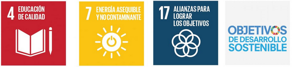
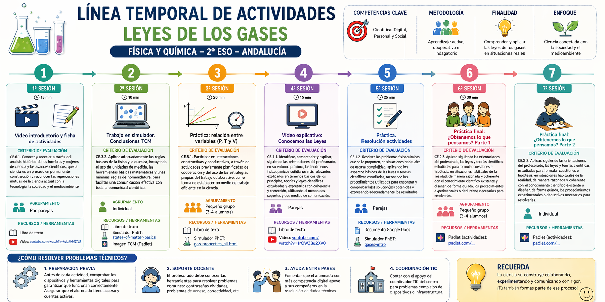

Justificación didáctica
La presente situación de aprendizaje, dirigida al alumnado de 2º de ESO en Andalucía, se enmarca en los principios pedagógicos de la LOMLOE, promoviendo un enfoque competencial, inclusivo y contextualizado del aprendizaje. A través del estudio de los gases, con especial atención a los gases de combustión, se pretende que el alumnado comprenda fenómenos científicos relevantes conectados con su vida cotidiana, como la contaminación atmosférica, el uso de la energía y sus implicaciones medioambientales y sociales.
Desde una perspectiva didáctica, esta propuesta se fundamenta en el aprendizaje significativo y activo, fomentando la indagación, el pensamiento crítico y el trabajo cooperativo. La organización del alumnado en grupos heterogéneos de 3 o 4 miembros favorece la atención a la diversidad, el aprendizaje entre iguales y el desarrollo de habilidades sociales, alineándose con los principios de equidad e inclusión educativa. Asimismo, el uso de metodologías activas como el aprendizaje basado en proyectos permite integrar saberes y movilizar competencias clave, especialmente la competencia científica, la competencia digital y la competencia personal, social y de aprender a aprender.
La situación de aprendizaje contribuye al desarrollo de los Objetivos de Desarrollo Sostenible, en concreto el ODS 4 (educación de calidad), al promover una educación inclusiva y equitativa; el ODS 7 (energía asequible y no contaminante), mediante el análisis del impacto de los gases de combustión y la reflexión sobre fuentes de energía más sostenibles; y el ODS 17 (alianzas para lograr los objetivos), a través del trabajo cooperativo y la corresponsabilidad en el aprendizaje.
El producto final consiste en la elaboración y exposición de una presentación grupal, en la que el alumnado sintetiza y comunica los conocimientos adquiridos sobre los gases, sus propiedades y su impacto ambiental. Este producto permite evaluar no solo los saberes conceptuales, sino también habilidades comunicativas, digitales y de trabajo en equipo, fomentando una evaluación formativa y competencial coherente con el currículo vigente en Andalucía.
En definitiva, esta propuesta didáctica busca no solo la adquisición de contenidos científicos, sino también la formación de una ciudadanía crítica, responsable y comprometida con los retos globales actuales.

Elementos curriculares
Saberes Básicos
- FYQ.2.A.3: Uso de entornos virtuales y herramientas tecnológicas en el aprendizaje científico.
- FYQ.2.B.1: Aplicación de la teoría cinético-molecular a la interpretación de las leyes de los gases.
- FYQ.2.C.4: Análisis de los efectos del calor sobre la materia en situaciones cotidianas.
Criterios de Evaluación
- CE 2.3: Analizar la relación entre presión, volumen y temperatura mediante tablas y gráficas obtenidas experimentalmente o mediante simulación.
- CE 1.6: Elaborar pequeños trabajos de investigación utilizando el método científico y herramientas digitales.
Competencias específicas
- 1. Comprender y relacionar los motivos por los que ocurren los principales fenómenos fisicoquímicos del entorno, explicándolos en términos de las leyes y teorías científicas adecuadas, para resolver problemas con el fin de aplicarlas para mejorar la realidad cercana y la calidad de vida humana.
- 2. Expresar las observaciones realizadas por el alumnado en forma de preguntas, formulando hipótesis para explicarlas y demostrando dichas hipótesis a través de la experimentación científica, la indagación y la búsqueda de evidencias, para desarrollar los razonamientos propios del pensamiento científico y mejorar las destrezas en el uso de las metodologías científicas.
Competencias clave
-
CCL – Competencia en comunicación lingüística: Se desarrolla cuando el alumnado lee, interpreta y produce textos científicos sencillos, explicando fenómenos de los gases con sus propias palabras y utilizando vocabulario científico básico.
-
STEM – Competencia matemática y en ciencia, tecnología e ingeniería: Se trabaja al aplicar las leyes de los gases, interpretar gráficas, manejar variables (P, V, T) y resolver problemas científicos mediante el uso del método experimental y simulaciones digitales.
-
CD – Competencia digital: Se fomenta mediante el uso de simuladores virtuales como PhET, el registro de datos en entornos digitales y la interpretación de información científica en recursos tecnológicos.
-
CPSAA – Competencia personal, social y de aprender a aprender: Se desarrolla al trabajar de forma cooperativa en la experimentación virtual, tomar decisiones en grupo y reflexionar sobre el propio proceso de aprendizaje científico.
-
CC – Competencia ciudadana: Se promueve al analizar situaciones de la vida cotidiana (aerosoles, ollas a presión) relacionadas con el uso responsable de la tecnología y la seguridad en el entorno doméstico.
-
CE – Competencia emprendedora: Se trabaja al plantear hipótesis, resolver problemas reales y buscar explicaciones científicas a situaciones nuevas mediante la indagación y el pensamiento crítico.
-
CCEC – Competencia en conciencia y expresión cultural: Se desarrolla de forma transversal al comprender cómo el conocimiento científico ha permitido avances tecnológicos presentes en la vida diaria y en la cultura científica actual.
Curación de contenidos
A continuación, os presento las herramientas que vais a emplear para el estudio en esta SdA. Herramientas todas conocidas por vosotros como: Classroom, Canva, Genially, Youtube.
Rúbrica
| Nivel 4 (Excelente) | Nivel 3 (Notable) | Nivel 2 Aprobado) | Nivel 1 (Insuficiente) | |
|---|---|---|---|---|
| CE.1.1 Comprensión de fenómenos | Explica con precisión y usa lenguaje científico adecuado (0.5) | Explica correctamente con leves imprecisiones (0.4) | Explicación básica o incompleta (0.25) | No comprende ni explica correctamente (0.15) |
| CE.2.3 Método científicos | Hipótesis coherentes y análisis riguroso (0.5) | Hipótesis adecuadas y análisis aceptable (0.4) | Aplica parcialmente con ayuda (0.25) | No aplica el método científico (0.15) |
| CE.1.2 Resolución de problemas | Resuelve correctamente justificando pasos (0.5) | Resuelve la mayoría con algún error (0.4) | Resuelve casos sencillos con ayuda (0.25) | No resuelve los problemas (0.15) |
| CE.5.1 Trabajo cooperativo | Participa activamente y favorece al grupo (0.5) | Colabora de forma adecuada (0.4) | Participación limitada (0.25) | No colabora o dificulta el trabajo (0.15) |
| CE.5.1 Trabajo cooperativo | Uso autónomo, correcto y organizado (0.5) | Uso adecuado con pequeños fallos (0.4) | Uso con dificultad o ayuda (0.25) | No utiliza correctamente las herramientas (0.15) |
- Actividad
- Nombre
- Fecha
- Puntuación
- Notas
- Reiniciar
- Imprimir
- Aplicar
- Ventana nueva
Temporalización

{kind=link}
{kind=link}